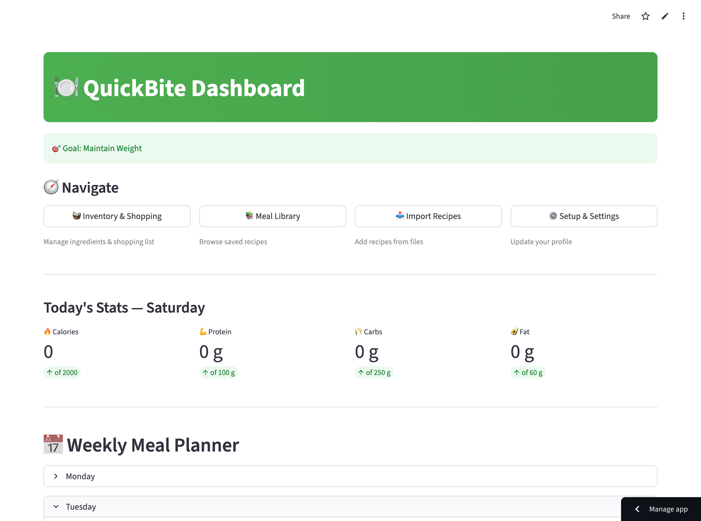

An AI-powered meal planner driven by what's already in your fridge
QuickBite is an AI-powered meal planning system engineered to help busy individuals automatically manage food inventory, track health metrics, and generate tailored, time-saving menus. Moving beyond typical open-ended chat assistants, QuickBite provides an integrated interface where a user's available ingredients directly dictate data-driven nutritional targets.
Tech Stack
Three pain points block consistent, nutritious meals
Many individuals—specifically students, time-strapped workers, and health-conscious professionals—struggle to plan and prepare consistent, nutritious meals due to significant time and energy constraints. This daily burden surfaces in several key user pain points:
Manually planning menus and tracking ingredients takes hours out of a busy week.
Users routinely forget what ingredients are sitting in the back of their fridge, leading to wasted food and unnecessary grocery overspending.
Keeping precise counts of daily calories, proteins, carbohydrates, and fats is highly tedious, causing users to abandon long-term fitness or health goals.
From surface-level prompts to a full-stack product
As both the designer and developer, my goal was to move past surface-level AI prompts and build a full-stack product that handles complex data logically while maintaining a highly scannable, frictionless user experience:
Inventory-Driven Recipes
Automatically deliver easy-to-cook recipes customized precisely around what the user already has in stock.
Data-Driven Targets
Provide users with the ability to set specific nutrition limitations (e.g., fitness milestones or calorie restrictions) and track their real historical data.
Cohesive Workspace UX
Bridge the gap between conversational AI and data dashboards, ensuring both features complement each other in real-time.
Three builds shaped by testing and faculty critique
Building QuickBite required an iterative journey where I coupled “vibe coding” UI creation with backend structured logic, refining the application across three major builds based on technical testing and faculty critique.

Build 1 — initial Streamlit interface and conversational flow before prompt constraints.
Architecture & Prompt Constraints
Action: I initiated the product by constructing a GitHub repository and establishing a live API link to Google AI Studio.
Design Rationale: I needed to understand the core data structure of an AI assistant from the ground up before mapping out dense UI frameworks.
Testing & Iteration: Initial tests revealed that the Streamlit interface frequently caused the bot to repeat identical questions during conversations, ruining the natural pacing.
I modified the prompt engineering rules, implementing strict behavioral constraints in the system prompt to enforce clean, linear, and context-aware conversational logic.
Modular Layout & Mentor Critiques
Action: As features multiplied, managing a single monolithic codebase became unsustainable. I modularized the application, breaking functions into distinct Python files and surfacing them as clear tabs on the main screen.
UX Critiques & Pivot: Feedback from design mentors entirely reshaped the product's UX architecture:
I was pushed to evaluate whether the health dashboard should visualize what the bot suggested or what the user actually consumed. Recognizing that real health tracking requires accuracy, I altered the logic to allow users to input what they actually ate, tracking real numbers instead of assumptions.
The chat interface and data visualization sections were initially separated, causing significant cognitive load. I re-architected the layout to place the chat stream and dashboard side-by-side. This immediate visual pairing allowed statistics to update live alongside the conversation.

Build 2 — modular tab navigation as features expanded beyond a single screen.

Side-by-side workspace — chat stream paired with live macro dashboard after layout realignment.
Synchronized Features & State Validation
Action: In this phase, I built out the full suite of supporting user features: an updated Inventory list, an automated Shopping List, a comprehensive Meals Library, and a Recipe Importer option.
Testing & Bug Fixes: Internal testing exposed a broken data loop—items updated inside the inventory tab failed to reflect accurately within the generated AI recipes, and the macro-statistics overview lagged.
I refactored the internal state logic (data/state.json), using Anthropic Claude as the core reasoning engine to read and generate structured JSON outputs. This securely locked all features together so that changes in inventory parameters immediately updated recipe outputs and statistical calculations simultaneously.
Incorporating feedback regarding temporary storage, I added explicit workflows enabling the browser session to clear or save tracked meal records seamlessly.

Inventory and Shopping List — missing ingredients pushed automatically from generated recipes.

Meals Library and Recipe Importer — supporting features added in Build 3.
A scannable workspace for mobile and desktop
The final design of QuickBite addresses user constraints through a clear, scannable layout designed with mobile responsiveness and desktop visibility in mind:

Side-by-side workspace — message the assistant while inventory updates live on screen.
Side-by-Side Workspace
Users can actively message the meal assistant on one half of the screen while seeing their primary kitchen inventory update in real-time on the other.
Smart Inventory & Grocery Mapping
The assistant checks current items in your fridge, identifies exactly what is missing for a generated meal, and automatically pushes those specific missing ingredients to the Shopping List tab.
Smart inventory and grocery mapping — missing items flow to the Shopping List tab.

Goal calibration — users set a primary goal and track macros through visual progress meters.
Dynamic Goal Calibration
Users input their primary goal (e.g., “Staying Fit”). QuickBite configures calorie limitations and logs actual historical breakdowns—displaying calories, proteins, carbohydrates, and fats through visual progress meters.
From conceptual bot to functional data-driven product
QuickBite successfully evolved from a conceptual bot into a functional data-driven product.
Eliminated decision fatigue by providing recipes tailored to the user's specific fridge contents.
Created a multi-modal tool where inventory, shopping, and nutrition work in sync rather than as separate tasks.
This project demonstrates how AI can handle the “hidden work” of health management, allowing users to achieve their fitness goals with minimal effort.
What building with AI changed about my confidence
Before starting this project, my relationship with AI development was grounded in hesitation. I assumed that creating tailored AI features required an exhaustive coding or machine learning background, and I limited my usage of tools to standard prompting.
Stepping into the developer role completely changed my confidence, which grew from a 4/10 to a 7/10 over the course of the project. I learned that AI does not replace human design or creativity—it acts as an architecture that extends it. By leveraging Claude for structured backend UI data and Gemini for prompt validation, I successfully functioned as a “full team of one,” designing the user experience while debugging the engineering framework. This project proved that careful iteration and adapting to critique are what truly transform a conceptual prototype into a working product.